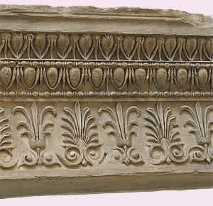
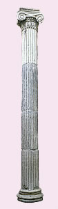

The Erechtheion is one of the strangest Greek temples in its design. It does not follow the normal rules of Greek temple building and is not symmetrical, because it includes several ancient cult sites.

A part of the decorated marble band from the Erechtheion

An Ionic column from the Erechtheion
The temple was built on two different levels due to the uneven land and it has two porches, one on its north and one on its east side.
Attached to the south wall of the building is the famous porch of the Caryatids, who face the Parthenon and the processional way used during the Panathenaia.